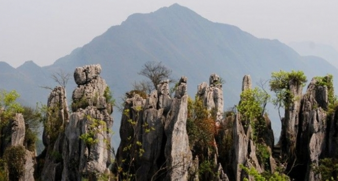
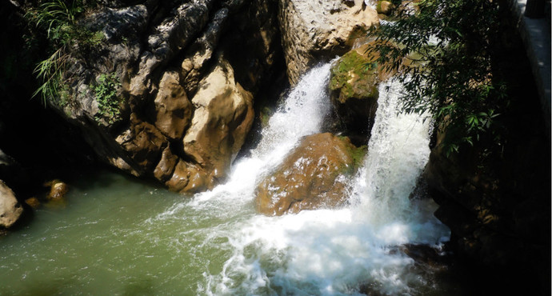
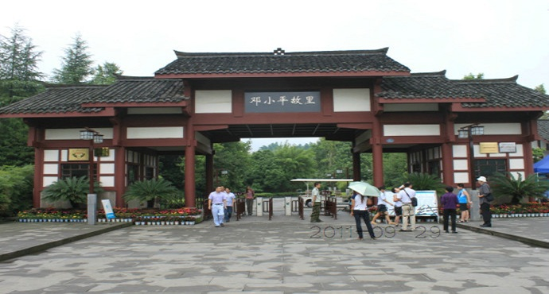
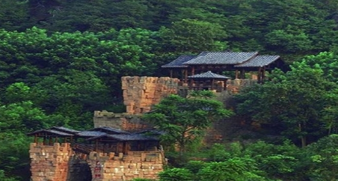
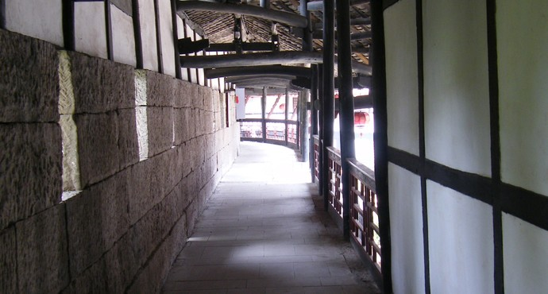
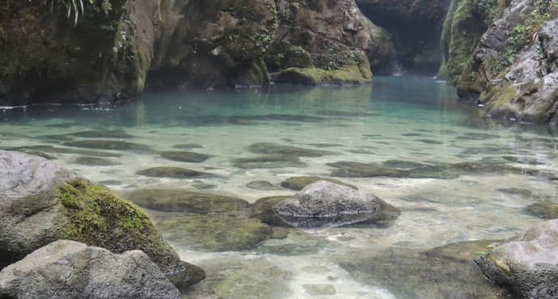
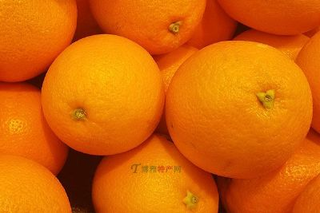
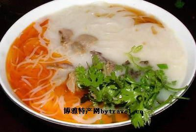
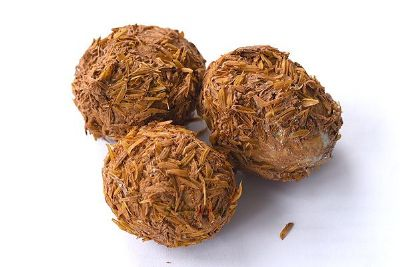

简介
广安，四川省地级市，世纪伟人邓小平的故乡。位于四川省东北部，东、南两部分与重庆市垫江县、长寿区、渝北区、合川区接壤，西部与遂宁市蓬溪县和南充市嘉陵区、高坪区相邻，北部与南充市蓬安县和达州市渠县、大竹县毗连。广安是四川省唯一的“川渝合作示范区”和距离重庆主城区最近的地级市，纳入了重庆1小时经济圈。
1993年7月2日，经国务院批准设立广安地区，1998年7月31日，经国务院批准撤销广安地区设立广安市。现总辖广安区、前锋区、岳池县、武胜县和邻水县，代理管辖华蓥市，总面积约6344平方千米，市人民政府驻广安区思源大道。拥有国家A级景区16个，其中1个5A级，5个4A级。国家水利风景区3处，省级湿地公园2处。乡村旅游每年接待游客数百万。邓小平故里市及相关遗迹，宝箴塞、褒先寺、肖溪古镇等遗址文化积淀丰厚，嘉陵江、金城山、御临河小山峡等景色亦是游客探古访幽、观光休闲的好去处。广安不仅是邓小平同志的故乡，这里还孕育了“红岩魂”，形成了独具特色的红色旅游资源，成为了全国12个“重点红色旅游区”和30条红色旅游精品线路之一，是四川红色旅游的龙头和全国红色旅游的重要目的地。2014年，广安成功举办“5.19”中国旅游日主会场活动。
风景

特产

邻水脐橙

岳池米粉

广安盐皮蛋
广安欢迎您！